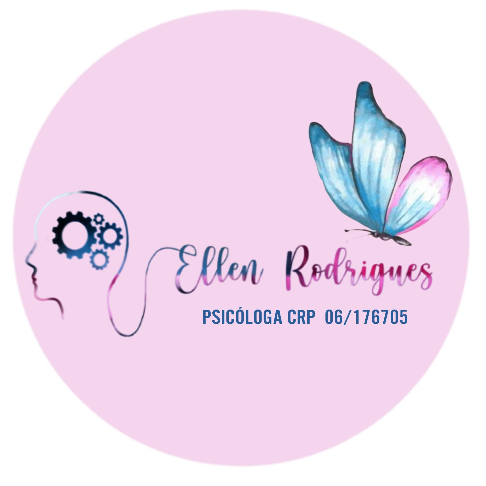

Sobre mim


Psicóloga há 8 anos, atendendo sob a abordagem de Orientação Psicanalítica, posso dizer que sou apaixonada pela minha profissão, onde a mesma me possibilitou atuar também como palestrante.
Durante estes anos de experiência, me dediquei a ajudar adolescentes, adultos e idosos, oferecendo um espaço de cuidado, escuta e acolhimento sem julgamentos.